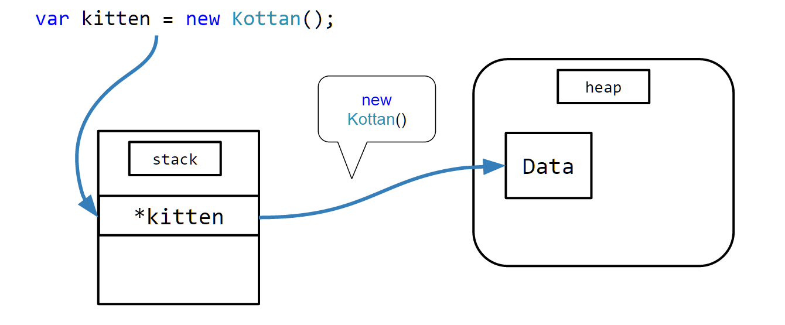

C# course
Lecture 3
Custom types
Agenda
- Classes && (objects || class instances)
- Access modifiers
- Members
- Structs
- Namespaces and Assemblies
- The Object type
- Enums
- Anonymous types
- Interfaces
Classes && (objects || class instances)
A class is a code template for creating objects.
It can contain:
- data members aka. state
- behavior aka. function members
Simplest class ever:
1: 2: 3: 4: 5: 6: 7: 8: |
|
In order to give birth to our Kottan (class) we need to use new operator:

Static
Static members
- belong to type (not object instance)
- static constructor can’t have any parameters
Static classes
- can only have static members
- there is no possibility to instantiate (new up) static class
Partial classes
- Definition can split between multiple files, but only in one assembly.
- Can have partial methods as extensibility points (only void)
- Usually used to split generated and user code.
Sealed classes
Cannot be inherited
Why do we need this?
- Prevent extensibility or misuse
- Some framework classes sealed for performance and security implications
Anonymous types
- Classes created by the compiler on the fly
- Has overridden Equals method
- You can omit the name of property passing variable to AT
Anonymous types
Convenient way to create not reusable object
1:
|
|
- The type name is generated by the compiler and is not available at the source code level.
- The type of each property is inferred by the compiler.
Access modifiers
Keywords to declare the accessibility of a type or member
Keyword |
ApplicableTo |
Description |
|---|---|---|
private |
Member |
Access limited to the class |
protected |
Member |
Access limited to the class or derived classes |
internal |
Class, Member |
Access limited to the current assembly |
Keyword |
ApplicableTo |
Description |
|---|---|---|
protected internal |
Member |
Access limited to current assembly and derived types |
public |
Class, Member |
No restrictions |
Access modifiers (Defaults)
- Class is internal by default
- Member is private by default
Therefore the following declaration:
1: 2: 3: 4: |
|
is equivalent to:
1: 2: 3: 4: |
|
Methods
Methods define behavior
The signature of every method consists of:
- Method name
- Access modifier
- Return type or void (if nothing to return)
- Zero or more parameters
1: 2: 3: 4: 5: 6: 7: |
|
Constructors
Constructor is meant to do all necessary for object creation
- parameters should indicate what is needed to create the object
- compiler creates default constructor if no specified
Two types of constructors:
Static
Runs once per type
Note: can be triggered by accessing a static member
Instance
Runs once per instance
Constructors
These two guys are equivalent:
1: 2: 3: 4: 5: 6: 7: 8: 9: 10: 11: 12: 13: 14: |
|
Overloading
- Allows you to define multiple methods with the same name
- These methods should have unique signature
- Compiler finds and invokes the best match
Params
params keyword means that you can pass variable number of arguments
- Can be only the last in parameters list
- All passed parameters will be converted into an array

Ref Parameters
- Arguments in C# by default are passed by value
- ref means that parameter will be passed by reference into method
- Must be assigned before going into method
- ref modifier must be used in method declaration and invocation
Out Parameters
Just like ref but: - Used to pass data from inside the method back to calling code - Must be assigned before going OUT of method
Passing By Value vs Passing By Ref
- When you pass ref object by value – you’re passing reference inside the method.
- Therefore it’s impossible to change this reference until you pass it by reference.
Optional Arguments
- Helps to define default values for arguments so you don’t need to specify them
- Could combine several methods overloads into one
- Can’t have any value calculated during runtime, so you can’t specify default parameter as
kat = new Kottan()
Extension Methods
- Allow you to extend any class with your custom method
- Give you syntactic sugar for calling them
- Method must be static
- Object you’re extending could be null
Fields
Fields are named storage for values or references depending on their type.
Depending on where are they stored they could be:
- Instance
- Static (Type field)
This Keyword
this is the reference to current instance
Can be used only inside instance context, never in static.
Const
const – set at compile time and cannot be change thereafter
- Must be either built-in types or an enumeration type (
enum)
Const Pitfalls
Compiler can assume that value really will never change and copy it as a literal. Therefore if somebody referenced your assembly – the don’t get your changes until recompilation.
readonly
readonly – field can be set only* during construction.
- We don't count reflection
properties
Just get and set methods
- Mechanism of encapsulation
- Some systems require them, i.e. data binding
- Way to define “field” in
interface
properties
Syntactic sugar
1: 2: 3: 4: 5: 6: |
|
Indexers
Property that takes one or more arguments and accessed with array-like syntax.
Object Initializers
Simplify setting of accessible fields or properties
1: 2: 3: 4: 5: |
|
1: 2: 3: 4: 5: |
|
operators
- Allow you to apply operations to our custom types
- From IL perspective operators are just methods
Unary operators (CAUTION! BORING SLIDE!)
Operator |
IL method |
|---|---|
+ |
op_UnaryPlus |
- |
op_UnaryNegation |
! |
op_LogicalNot |
Unary operators (CAUTION! BORING SLIDE!)
Operator |
IL method |
|---|---|
~ |
op_OnesComplement |
++ |
op_Increment |
-- |
op_Decrement |
Binary operators (CAUTION! BORING SLIDE!)
Operator |
IL method |
|---|---|
+ |
op_Addition |
- |
op_Subtraction |
* |
op_Multiply |
/ |
op_Division |
% |
op_Modulus |
Binary operators (CAUTION! BORING SLIDE!)
Operator |
IL method |
|---|---|
^ |
op_ExcusiveOr |
& |
op_BitwiseAnd |
| | | op_BitwiseOr |
| << | op_LeftShift |
Binary operators (CAUTION! BORING SLIDE!)
Operator |
IL method |
|---|---|
| >> | op_RightShift |
== |
op_Equality |
!= |
op_Inequality |
| < | op_LessThan |
Binary operators (CAUTION! BORING SLIDE!)
Operator |
IL method |
|---|---|
| > | op_GreaterThan |
| <= | op_LessThanOrEqual |
| >= | op_GreaterThanOrEqual |
Conversion Operators Implicit & Explicit
Implicit - casting to other type without specifying it
1:
|
|
Explicit - casting to other type only explicitly specifying it
1:
|
|
Conversion Operators Recommended Approches
Conversion operators are not widespread because in most cases it’s not obvious that types support them.
More preferred approaches, that easier to discover:
- Constructor with parameter of type to convert from
- Instance ToXXX and static FromXXX methods
Events
Member that enables type to provide notifications when interesting things happen, using a subscription-based model*.
*Don’t go into much detail since we have a lecture about delegates and events
Nested Types
Just like the normal classes with few differences:
- Has more choices for accessibility (can be private)
- Can access the enclosing type’s private members
- Default accessibility is private
Finalizers
Destructors are for releasing unmanaged resources.
- Cannot invoke explicitly since called by GC
- Cannot overload
1: 2: 3: 4: 5: 6: 7: |
|
structs
Similar to classes with the following differences:
- A struct is a value type, whereas a class is a reference type
- Deriving from System.ValueType
- Can’t have virtual members
- Doesn’t support inheritance
- Can’t have paramerterless constructor and finalizer (changed in C# 6)
- Always passed to methods by value
- Can implement interfaces
benefits
- Created on the stack hence you don’t have any pressure to GC.
- They are simpler memory layout in comparison with classes which contain two additional header fields
When Do We Need Them?
When performance is critical:
- Creating a large number of objects
- Creating a large collection of objects
How To Implement Correctly
- Override Equals method
- Implement IEquatable
interface (strongly-typed Equals) - Override GetHashCode method
Namespaces and Assemblies
Be aware that a namespace and an assembly aren’t necessarily related.
CLR doesn’t know anything about namespaces because it is just a way to make the type more unique.
Namespaces and Assemblies
A single assembly can contain types in different namespaces. For example, the System.Int32 and System.Text.StringBuilder types are both in the MSCorLib.dll assembly.
One namespace can be in several Assemblies, for example System.Configuration present in System.Windows.Form.dll and System.Data.dll
System.Object
All of your classes and almost every classes in .NET are implicitly derived from System.Object class.
Therefore the following records are the same:
1: 2: 3: |
|
System.Object relationships

System.Object members
Equals() – override me
Returns true if two objects have the same value
GetHashCode() – override me
Returns a hash code for this object’s value
System.Object members
ToString() – override me
Returns name of the type (this.GetType().FullName)
GetType() – you don’t own me!
Returns an instance of a Type-derived object that identifies the type of the object.
*also there are Finalize() and MemberwiseClone()
Enums
Special type that lets you specify a group of named numeric constants
- Underlying values are of type int
- Constants 0, 1, 2… are automatically assigned
Enums Flags
You can combine enum members. To prevent ambiguities values should be assigned in powers of two:
1: 2: 3: 4: 5: 6: 7: |
|
Enums Flags
Then use bitwise operators in order to combine enums and determine if value exists in the combination:
1: 2: |
|
interfaces
Interface is a group of related methods, properties and events
- No implementation details
- All members are public
- Classes and structs can inherit from an interface and provide an implementation
- Any class or struct can implement multiple interfaces